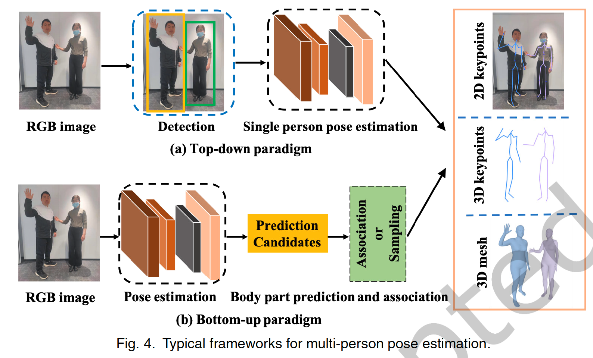
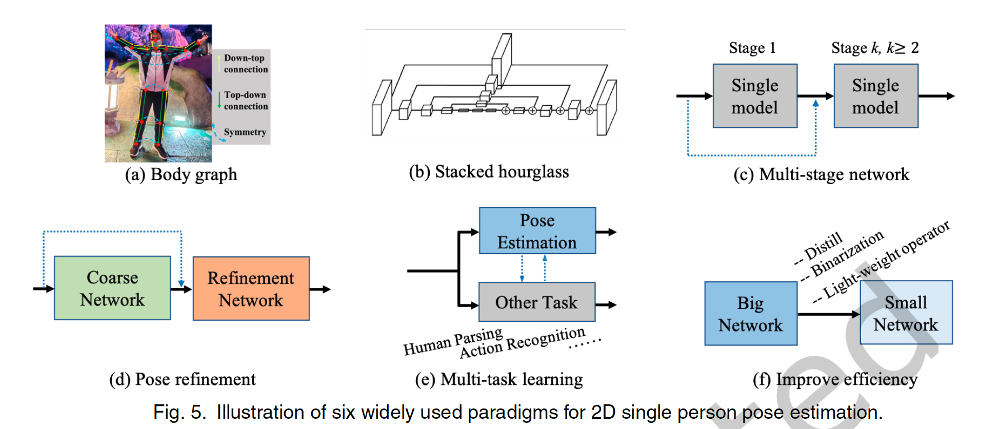

3D Multi-Person Pose Estimation (HPE) Reviews
Taxonomy
- By method: Top-Down; Bottom-Up
- By time dimension: Frame; Time Sequence
- By input type: Monocular; Multi-View
- By human number: Single; Multiple
- By output type: Skeleton; Mesh (SMPL, SCAPE, DensePose)
Possible Self-Supervision Methods
- Do an “event inpainting”, and try to predict the missing events.
- Same as the point 1, but predict the number of events missing instead.
- Set a certain area () in
xyplane all to 0, given a small piece , and try to predict the . - Given a subgraph of events in the human body, try to predict the following events that are generated by the same part.
- Randomly set some nodes’
y(which part in the human body, which human id, …) to 0, and let the network refill. - Predict the position of the future event for a certain part based on the “optical flow/motion vector” generated.
Major Points from Papers
- In order to be flexible enough, researchers choose to predict pixel-based camera-centered coordinates instead of calibrated absolute coordinates. In this way, they can bypass the camera’s intrinsic and extrinsic issues and not be bound to a single type of hardware. Also, they can work on any images without knowing the parameters of the camera. In most cases, we also don’t need the absolute coordinates.
- To make the system support multi-person, one common way is to have a two-step structure and use a pretrained bounding box detection network in the first stage. This could be hard for us since our input feature (TORE) is far different from the RGB images and definitely need to fine-tune.
- Instead of Single-Image-based methods, more papers focus on video-based 3D MHPE nowadays.
Common Points Among All HPE Papers
-
For 2D pose estimation, the following are common tricks:
-
Multi-tasking
※ Highly possible to be applied in our work, but the task need to be carefully designed based on the graph's characteristics.- Jointly do 2D/3D pose estimation.
※ Possible - Human activity recognition.
※ Not applicable - Human part segmentation.
※ Maybe, but need a pipeline to generate human part label
- Jointly do 2D/3D pose estimation.
-
Teacher-student/Distill/Quantification -> small nets
※ This may not work here, as GNN itself is small and efficient enough. -
Refinement blocks
※ We can definitely use the though of refinement -
Hourglass scheme
※ We can try to build a similar structure in GNN -
Multi-stage network
-
-
For 3D HPE, the following frameworks are frequently used:
- Image -> Heatmap -> Joints Coordinates
- Image -> 2D Pose -> 3D
- Image -> 2D Pose, + Image -> 3D
-
For SMPL, here is the common pipeline:
Camera Distance-aware Top-down Approach for 3D Multi-person Pose Estimation from a Single RGB Image
Points
-
They construct the system based on the top-down approach that consists of DetectNet, RootNet, and PoseNet.
-
They include some intrinsic matrix parameters in their input (, where are from camera intrinsic). is an estimated fixed number (2000mm x 2000mm) to indicate an approximate “human bounding box” size in real life. is the predicted bounding box size on the image in pixels.
-
What they do is not directly predicted the actual depth , instead, they predict a correction factor based on the mentioned above. In this way, they take the information from the image and intrinsic directly into the pipeline, which eases the model’s job and makes the pipeline more flexible.

-
The PostNet is a standard one, just
RestNet+TransConvs->Heat Maps->Argmax->Coordinatespipeline. -
Even if you input a random image from an unknown hardware (whose intrinsic is unknown), their system can still provide an overlay-able prediction with a given (random) and .
-
For both predicted root coordinates by RootNet or the pose coordinates by PoseNet, the and coordinates are directly in the image plane, with a unit of the pixel.
-
The z coordinates predicted in the PoseNet are relative coordinates to the human center. And the final prediction is this relative z value + predicted . That’s the reason that even is wrong, the predicted 3D coordinates could still align.

Single-Shot Multi-Person 3D Pose Estimation From Monocular RGB
Points
- It proposed a new dataset MuPoTs-3D, which is the first large-scale multi-person 3D HPE dataset with occlusion.
- They didn’t use a marker-based MoCap system as that don’t works. So they merely employ purely multi-view marker-less motion capture to create the 20 sequences of MuPoTs3D. Here is the system they used.
- They did data augmentation with background and clothing replacement, as well as rotation and scaling.
- Bottom-Up method. Predicting all the joints at first, then assemble them.
Questions
- Not very clear how they do the assembling of joints.
Monocular 3D Multi-Person Pose Estimation by Integrating Top-Down and Bottom-Up Networks
Points
-
This paper integrates both top-down and bottom-up methods to bypass the inherent disadvantages for both schemes. They do the bbox detection at first, and then predict the relative 3D poses and IDs of joints for each joints in the cropped image, then combine these image pieces to a complete channel. This heat map channel is concatenated to original input to serve as the input of the bottom-up methods. Then the bottom-up branch predict 4 maps:
- A 2D pose map.
- A relative joint depth map.
- A human root depth map.
- A human ID map.
-
Graph Neural Network (GNN) is applied to do pose refinement in the top-down branch. This could help fix the incomplete pose caused by occlusion or partially out-of bbox body parts.
-
Two TCNs are used to estimate both person-centric 3D pose and camera-centric root depth based on a given sequence of 2D poses similar to [6].
Graph-Based 3D Multi-Person Pose Estimation Using Multi-View Images
General
- Single-view 3D pose estimation approaches:
- 2D pose -> 3D pose.
- Jointly learning 2D and 3D poses.
- Directly regressing 3D poses.
- Multi-view 3D pose estimation approaches:
- 2D -> 3D: estimate 2D joints of the same person in each view through monocular pose estimator, then lift the matched 2D single view poses to 3D locations. This 2D to 3D process could be done by triangulation, single-person 3D PSM, or 1x1 Conv
- Direct 3D pose estimation.
Points
- They used the graphs for two parts: estimate the human center coordinates, and the whole body pose.
- They take human structural prior to achieve better performance.
Recent Advances of Monocular 2D and 3D Human Pose Estimation: A Deep Learning Perspective
 OpenPose: Realtime Multi-Person 2D Pose Estimation using Part Affinity Fields
Questions
-
如何把预测的某个关节点的confidence map中含有的多个Local Maxima代表的多个不同人的同一个关节点区分开？
- 使用了NMS（Non-Maximum Suppression）算法。直接得到discreet的关节点candidates。
-
得到的这些不同人的关节点如何重新match到一起，形成一副副骨架？
-
首先，对于已知会有连接的两个joints（如左手手腕和左手手肘），假设它们对应的confidence map中分别得到了和个候补点，那么对于每组可能的组合（共个），分别计算一下沿着方向PAF的积分。实际操作上，用的是AB点之间等距取样的几个点的PAF值的和。
-
然后对这个类型点和个类型点做一个bipartite matching，简单说就是对于两组点，尝试在这两组点中建立尽可能多的匹配，每个匹配对应一条图上的边，edge的value就是由上一步定义的PAF积分计算得到。任意一个点最多匹配另一组中的一个点。目标是让这些匹配得到的边的值的和最大。这是一个NP-Hard问题，具体匹配由匈牙利算法执行。
这里的就是所有边值的和，m和n分别是两组关节点组和中的点，是上面提到的mn两点间的PAF积分值。代表分别属于和两组点中的m和n点是否相连。如果是，值为1；反之为0。尝试最大化这个。
-
-
PAF的GT怎么得到的？
-
给定两个相连的关节点，连线。以这个连线为等分线沿线的垂直方向做一个矩形。
-
在这个矩形内的就是单位向量，反之为0。
-
如果图中有多个人，且多个人的同一个部位出现在了同一个点上，则其对应多个单位向量，最终的值是这些单位向量向量和的均值:
值得注意的是，对于每种肢体（不是关节点），对所有同种肢体只生成一张PAF map。由于某个2D点可能同时在多个人的这个肢体上（Occlusion），所以对于map上某个特定点的PAF值，是在这个点上所有可能在的人的该肢体的单位向量的向量和的均值。
-
-
如果某个部位缺失了怎么办？
- 缺失了就缺失了。本文会依次匹配所有PAF中含有的端点对，如果某个部分没了，那就单纯把这部分移除就好了。
Points
-
PAF是一系列单位向量，它们分布在每个肢体上（两个有联系的joints），方向是肢体的指向。
-
整个模型是顺序的，先predict-refine PAF（前一半蓝色区域的网络），然后再predict-refine关键点（后一半橙色区域的网络）。前半和后半的第一个block是预测，后面全部都是refine阶段。之所以先PAF再KP是因为如果先预测KP可以用它来帮助预测PAF（知道了线端自然可以得到一些关于端点的信息），而如果反过来先预测端点，因为端点只是一个个独立的点，并不知道相互间的连接方法，所以对预测PAF结果并无帮助。
-
由于有的数据集并不会标出来所有的人，所以有时候即使网络预测出来了没有label的人，也会被loss所惩罚。他们的做法是加一个mask，让没有label的点不参与loss计算。
-
每个阶段都会单独计算L2 Loss并加起来。
-
在对各个部位NMS出来的一大堆可能的散点进行匹配的时候，文中做了几个关键的条件放松来加速运算：
-
本来这是一个全连接图预测问题，即人体中的每个点都应该和其他所有点进行matching。
-
第一个放松点是只根据先验知识采用最少量但最make sense的连接数（如头和脖子，手腕和手肘，脚踝和膝盖等），且仅对这些连接进行计算匹配。在这时其实人体骨骼模型已经成了一个spanning tree skeleton了。值得注意的是，他们最后还是加入了一些冗余匹配对，如耳朵和肩膀、手腕和肩膀等。这些冗余可以保证在拥挤的场景中更不容易出错。
-
第二个放松点是把本来是一个树状的、但连续的匹配问题（如本来应该匹配手腕-手肘-肩膀-脖子-……），但这里将其转换为了这些joints间的两两匹配问题（如手腕-手肘，手肘-肩膀，肩膀-脖子，……）。这是因为相邻关节的树模型已经被PAF充分model了，所以不需要。
-
-
在生成某个关节点的confidence map的GT时，先找出每个人对应的关节点p，然后以p为中心通过高斯模糊扩散开来。在合并多个人这个关节的扩散形成的blob时，若有交叉，取交叉二者/N者的最大值。不用average的原因是average可能会让多个blob变成一个，如图：
-
有趣的是，本文除了做HPE，还可以做车辆关键点检测和脚的关键点检测，非常牛。